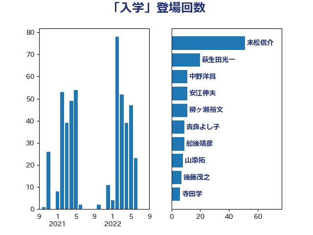

単語「入学」

| 末松信介 | 自由民主党 | 51 回 |
| 萩生田光一 | 自由民主党 | 20 回 |
| 中野洋昌 | 公明党 | 11 回 |
| 安江伸夫 | 公明党 | 11 回 |
| 柳ヶ瀬裕文 | 日本維新の会 | 11 回 |
| 吉良よし子 | 日本共産党 | 9 回 |
| 舩後靖彦 | れいわ新選組 | 9 回 |
| 山添拓 | 日本共産党 | 8 回 |
| 後藤茂之 | 自由民主党 | 7 回 |
| 寺田学 | 立憲民主党 | 6 回 |
| 平林晃 | 公明党 | 6 回 |
| 上野通子 | 自由民主党 | 5 回 |
| 宮本徹 | 日本共産党 | 5 回 |
| 岡本あき子 | 立憲民主党 | 5 回 |
| 岸田文雄 | 自由民主党 | 5 回 |
| 野田聖子 | 自由民主党 | 5 回 |
| 高木かおり | 日本維新の会 | 5 回 |
| 伊藤孝恵 | 国民民主党 | 4 回 |
| 吉田統彦 | 立憲民主党 | 4 回 |
| 山井和則 | 立憲民主党 | 4 回 |
| 市村浩一郎 | 日本維新の会 | 4 回 |
| 新垣邦男 | 立憲民主党 | 4 回 |
| 浜田聡 | NHK党 | 4 回 |
| 藤巻健太 | 日本維新の会 | 4 回 |
| 坂本哲志 | 自由民主党 | 3 回 |
| 坂本祐之輔 | 立憲民主党 | 3 回 |
| 塩村あやか | 立憲民主党 | 3 回 |
| 寺田静 | 無所属 | 3 回 |
| 柚木道義 | 立憲民主党 | 3 回 |
| 梅村みずほ | 日本維新の会 | 3 回 |
| 浜口誠 | 国民民主党 | 3 回 |
| 田村憲久 | 自由民主党 | 3 回 |
| 石橋林太郎 | 自由民主党 | 3 回 |
| 笠浩史 | 無所属 | 3 回 |
| 阿部弘樹 | 日本維新の会 | 3 回 |
| 三浦靖 | 自由民主党 | 2 回 |
| 下野六太 | 公明党 | 2 回 |
| 串田誠一 | 日本維新の会 | 2 回 |
| 佐藤英道 | 公明党 | 2 回 |
| 勝部賢志 | 立憲民主党 | 2 回 |
| 古屋範子 | 公明党 | 2 回 |
| 古川禎久 | 自由民主党 | 2 回 |
| 吉川元 | 立憲民主党 | 2 回 |
| 堂故茂 | 自由民主党 | 2 回 |
| 宮本岳志 | 日本共産党 | 2 回 |
| 山本香苗 | 公明党 | 2 回 |
| 志位和夫 | 日本共産党 | 2 回 |
| 浅野哲 | 国民民主党 | 2 回 |
| 深澤陽一 | 自由民主党 | 2 回 |
| 渡辺創 | 立憲民主党 | 2 回 |
| 熊谷裕人 | 立憲民主党 | 2 回 |
| 石川博崇 | 公明党 | 2 回 |
| 稲富修二 | 立憲民主党 | 2 回 |
| 近藤和也 | 立憲民主党 | 2 回 |
| 長友慎治 | 国民民主党 | 2 回 |
| 高橋光男 | 公明党 | 2 回 |
| 高階恵美子 | 自由民主党 | 2 回 |
| 鰐淵洋子 | 公明党 | 2 回 |
| ながえ孝子 | 無所属 | 1 回 |
| 一谷勇一郎 | 日本維新の会 | 1 回 |
| 三木圭恵 | 日本維新の会 | 1 回 |
| 三浦信祐 | 公明党 | 1 回 |
| 下条みつ | 立憲民主党 | 1 回 |
| 世耕弘成 | 自由民主党 | 1 回 |
| 中川宏昌 | 公明党 | 1 回 |
| 中川正春 | 立憲民主党 | 1 回 |
| 中曽根康隆 | 自由民主党 | 1 回 |
| 中谷一馬 | 立憲民主党 | 1 回 |
| 今井絵理子 | 自由民主党 | 1 回 |
| 佐々木さやか | 公明党 | 1 回 |
| 倉林明子 | 日本共産党 | 1 回 |
| 前原誠司 | 国民民主党 | 1 回 |
| 吉田はるみ | 立憲民主党 | 1 回 |
| 城井崇 | 立憲民主党 | 1 回 |
| 大西健介 | 立憲民主党 | 1 回 |
| 守島正 | 日本維新の会 | 1 回 |
| 宮口治子 | 立憲民主党 | 1 回 |
| 小川淳也 | 立憲民主党 | 1 回 |
| 小渕優子 | 自由民主党 | 1 回 |
| 小西洋之 | 立憲民主党 | 1 回 |
| 山田俊男 | 自由民主党 | 1 回 |
| 山田勝彦 | 立憲民主党 | 1 回 |
| 岡本三成 | 公明党 | 1 回 |
| 岸信夫 | 自由民主党 | 1 回 |
| 川田龍平 | 立憲民主党 | 1 回 |
| 斎藤アレックス | 国民民主党 | 1 回 |
| 朝日健太郎 | 自由民主党 | 1 回 |
| 杉本和巳 | 日本維新の会 | 1 回 |
| 柴田巧 | 日本維新の会 | 1 回 |
| 根本幸典 | 自由民主党 | 1 回 |
| 梅村聡 | 日本維新の会 | 1 回 |
| 森まさこ | 自由民主党 | 1 回 |
| 櫻井周 | 立憲民主党 | 1 回 |
| 池田佳隆 | 自由民主党 | 1 回 |
| 河西宏一 | 公明党 | 1 回 |
| 浜地雅一 | 公明党 | 1 回 |
| 牧原秀樹 | 自由民主党 | 1 回 |
| 田島麻衣子 | 立憲民主党 | 1 回 |
| 田村智子 | 日本共産党 | 1 回 |
| 白石洋一 | 立憲民主党 | 1 回 |
| 石井章 | 日本維新の会 | 1 回 |
| 磯崎仁彦 | 自由民主党 | 1 回 |
| 美延映夫 | 日本維新の会 | 1 回 |
| 舟山康江 | 国民民主党 | 1 回 |
| 芳賀道也 | 国民民主党 | 1 回 |
| 菅家一郎 | 自由民主党 | 1 回 |
| 菅義偉 | 自由民主党 | 1 回 |
| 菊田真紀子 | 立憲民主党 | 1 回 |
| 蓮舫 | 立憲民主党 | 1 回 |
| 藤田文武 | 日本維新の会 | 1 回 |
| 西村智奈美 | 立憲民主党 | 1 回 |
| 赤嶺政賢 | 日本共産党 | 1 回 |
| 遠藤敬 | 日本維新の会 | 1 回 |
| 里見隆治 | 公明党 | 1 回 |
| 野田国義 | 立憲民主党 | 1 回 |
| 長谷川淳二 | 自由民主党 | 1 回 |
| 青木愛 | 立憲民主党 | 1 回 |
| 青柳仁士 | 日本維新の会 | 1 回 |
| 馬場伸幸 | 日本維新の会 | 1 回 |
| 高市早苗 | 自由民主党 | 1 回 |